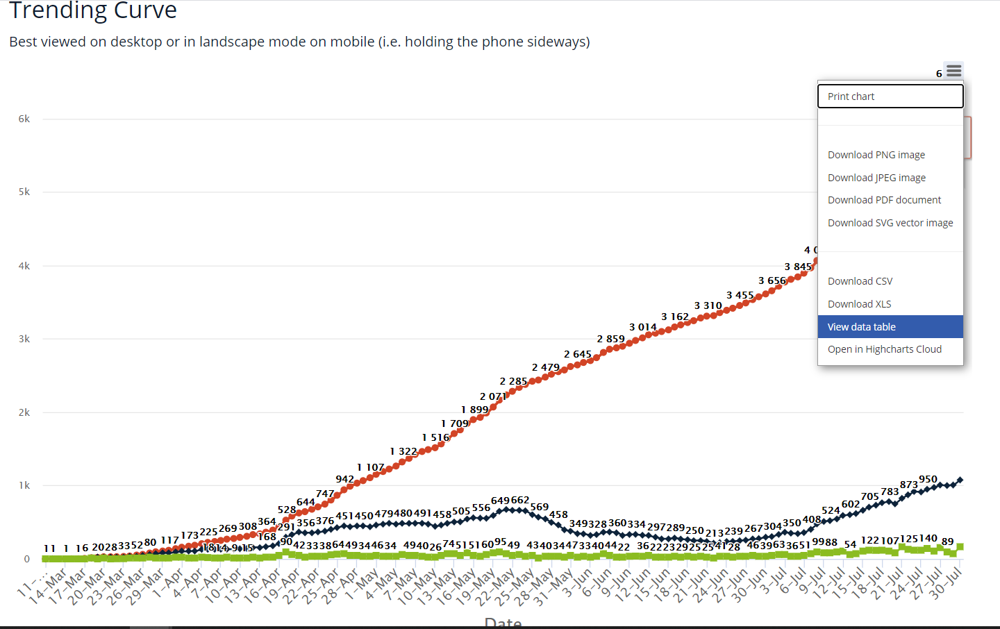

[ND] PCL Cases Historicals
Issue number 717
the-daniel-lin opened this issue on July 31, 2020 at 5:46 pm
Labels Historical Data not stale Backfill
State or US: North Dakota
Describe the problem We consider “Positive Cases” on the ND dashboard to refer to lab-confirmed PCR only cases.
The dashboard annotation says, “Positive Cases: Number of unique individuals who test positive for COVID-19 from state and private labs” – which is ambiguous as to the type of test.
However, ND has a separate serology reporting table, and this outreach (https://covid-tracking.slack.com/archives/C0124MP2E5C/p1590955808399900) seems to confirm PCR-only in “Positive Cases.”
The “Positive Cases” values on the state website largely align with the values in the cumulative hover-over graph, barring any changes that ND makes to their own historical data. We should be able to back-fill using this hover-over line graph. Each day in States Daily should correspond with the previous day on the line graph.
Link to data source https://www.health.nd.gov/diseases-conditions/coronavirus/north-dakota-coronavirus-cases
Hover-over graph looks like this: 
You should be able to view the data table and scroll down to look at the values without having to hover. Use Total Cases.
Updated
Positive Cases (PCR)in addition to other PCR-testing related metrics: PCR Testing encounters, PCR Tests (people), PCR Test (specimens)nd_post_20200911[DataStore]Coronavirus numbers by state - [Raw]StatesDaily.csv.txt nd_pre_20200911[DataStore]Coronavirus numbers by state - [Raw]StatesDaily.csv.txt